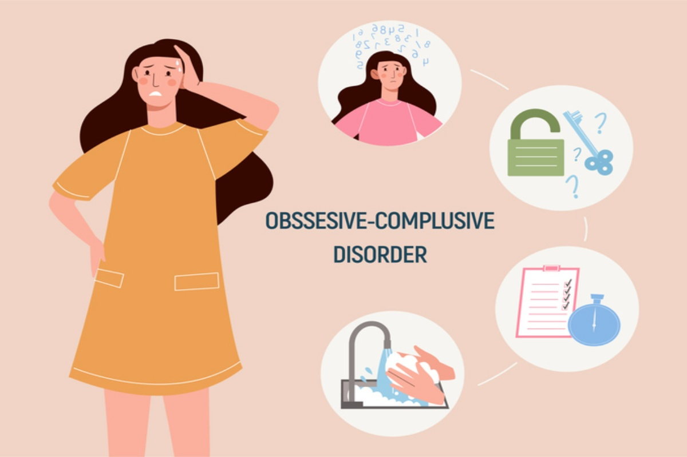
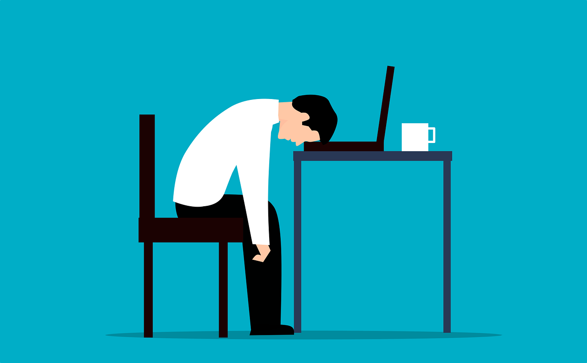
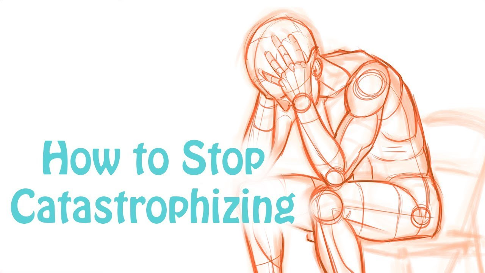
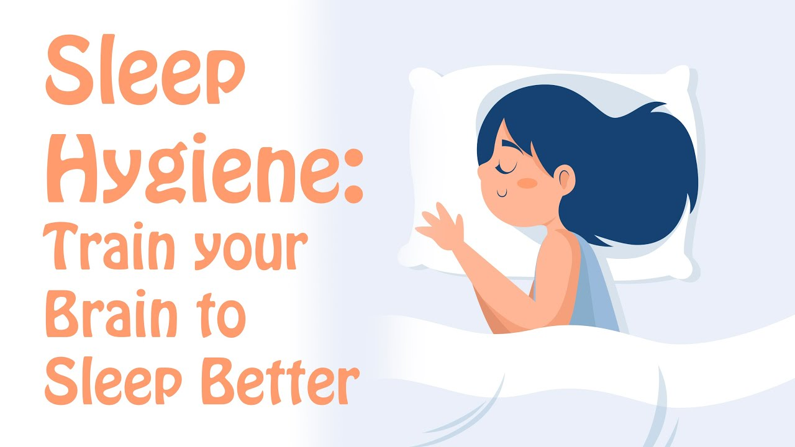
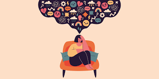
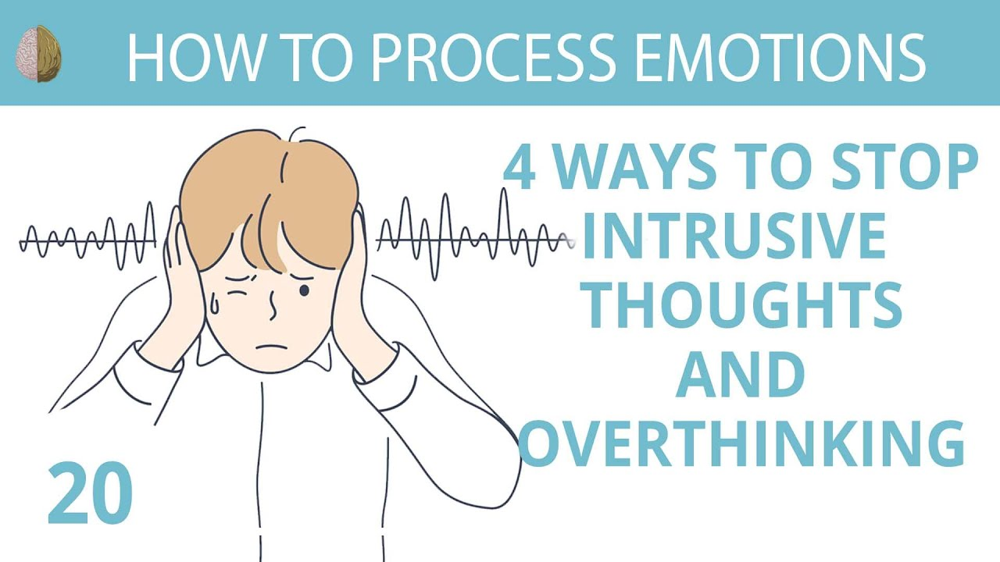
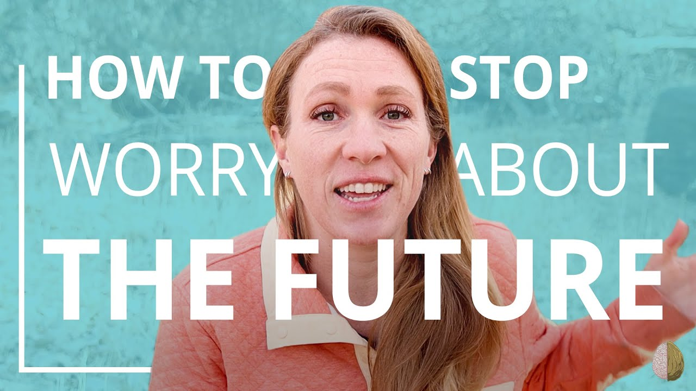
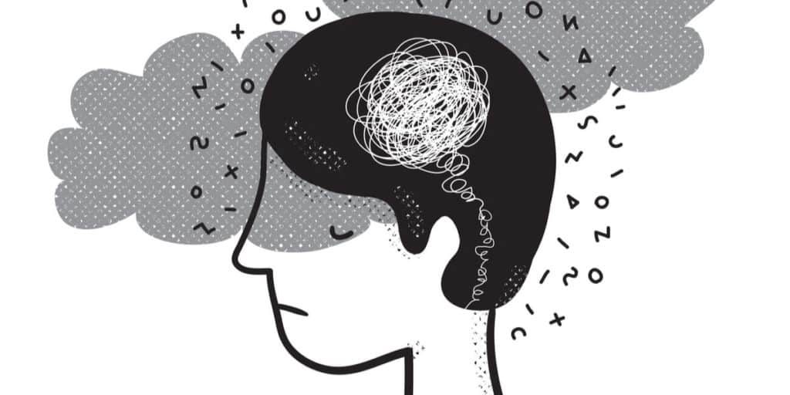
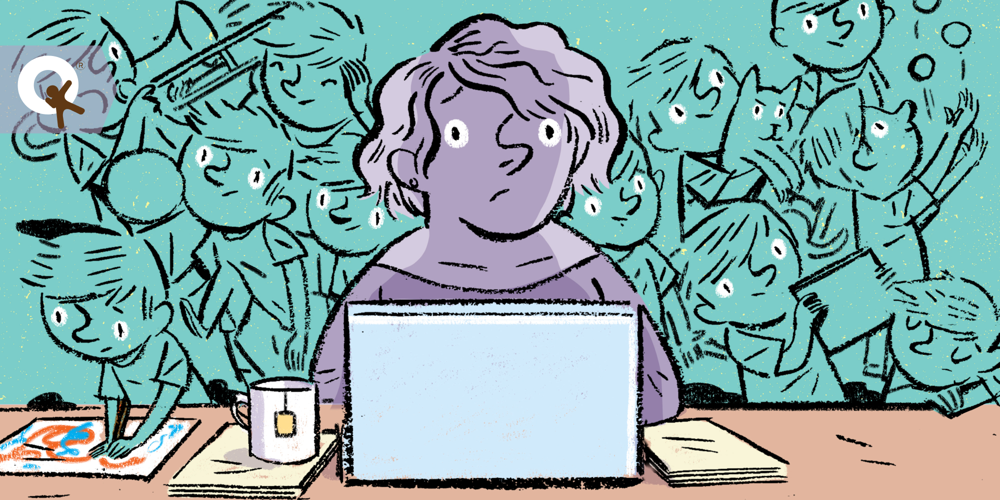

About Mental Health (Article)

Obsessive-Compulsive Disorder (Article)

Opening Up About My Struggle (Real Story)

Catastrophizing: How to Stop Making Yourself
Depressed and Anxious (Video)
Improve Your Mental Wellbeing (Article)

Train Your Brain to Fall Asleep and Sleep Better (Video)

How To Deal With Anxiety (Article)

Intrusive Thoughts and Overthinking (Video)

How to Stop Worrying About the Future (Video)

What is Posttraumatic Stress Disorder (PTSD)? (Article)

This is MY ADHD Story; Literally
(Real Story)